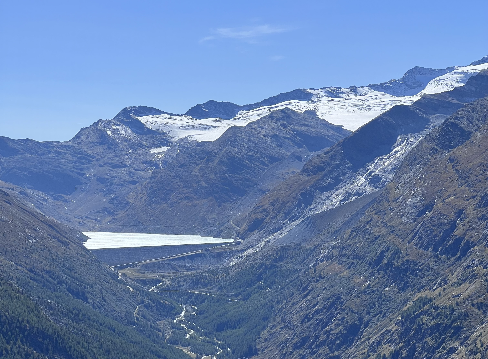

Fachbeiträge
Gianluca & Ruben
Tourismus im Saastal
Einleitung: Das Saastal ist ein sehr vielseitiger Ort, der sehr viele verschiedene Sehenswürdigkeiten und Aktivitäten zu bieten hat. Aufgrund der grossartigen Skigebiete und den Wanderwegen ist dies ein perfekter Ort, um Ferien zu machen. Oder etwa doch nicht? Dies ist aber eine sehr Einseitige Ansicht, denn niemand denkt an die vielen Auswirkungen, welche diese Aktivitäten mit sich bringen. Alles, was dafür verändert oder sogar geopfert wurde, wird weder auf deren (der) Homepage noch in den vielen Rezensionen erwähnt.
Bergbahnen:
Im Umkreis vom Saastal befinden sich viele verschiedene Bergbahnen. Sessellifte für die Ski Saison, die Gondeln, welche das ganze Jahr über offen sind. Durch sie wird man im Winter zu den jeweiligen Skigebieten befördert, oder im Sommer zu den Wanderwegen wie auch den Bergrestaurants. Zusätzlich gibt es für eine der längeren Strecken den sogenannten Metro Alpin Zug. Dies bedeutet, dass das ganze Saastal vernetzt ist und man diese Bahnen überall in den Wäldern sehen kann. Im Großen und Ganzen sieht das nicht schön aus. «Als wir durch das Saastal gefahren sind, um zu unserem Lagerhaus zu gelangen, sind mir direkt die unzähligen Bahnen aufgefallen, welche immer wieder wie grosse stählerne Türme das Landschaftsbild verzerren. Wieso fällt mir das denn direkt auf, habe ich mich gefragt. Nachdem ich ein bisschen darüber nachgedacht habe, bin ich zum Schluss gekommen, dass diese Bahnen einfach nicht in die Natur passen.» Da die meisten Bergbahnen das ganze Jahr über in Betrieb sind, werden diese über die ganze Zeit mit Strom versorgt, obwohl nicht immer jemand hinauffährt. Ausserdem wird einiges vom Wald abgeholzt, da die Gondeln nicht an den Bäumen hängen bleiben dürfen. (Die Gondeln nehmen viel Platz ein und verkleinern durch die Platzschaffung den Lebensraum der Tiere und Teile ihrer Nahrungsquellen. Dadurch, dass sie sehr laut sind, erschrecken sie diese auch.
Wanderrouten im Saastal:
Im Gesamten Saastal befinden sich insgesamt 83 Wanderruten, welche durch das Jahr immer wieder geöffnet werden. Jedoch haben die meisten Wanderwege, durch ihre Erstellung die Natur verändert, damit diese für die Menschen zugänglich wurden. All dies damit alle den Berg besteigen können. Die wenigen Wanderrouten, welche kaum vom Menschen beeinflusst worden sind, wären die Challenge Trails. Da sie durch steinige und unebene Gebiete führen sind sie sehr anstrengend und sind daher auch die schwersten Routen. Daher sind diese weniger für den Menschen geeignet. Da sieht man wie sehr der Mensch von seinen Eingriffen in die Natur abhängig ist.
Die längeren Routen, welche man mit wenig Erfahrung und ohne grosse Anstrengung gehen kann, wurden stark vom Menschen beeinflusst. Zum Beispiel wurden diese auf Trittsicherheit geprüft oder auch umgebaut, da man vielen Hindernissen aus dem Weg gehen musste. Die ganzen Passagen welche zu schönen Aussichtspunkten führen, wurden frei geräumt, um ein schönes Ergebnis zu erzielen. Dabei wurden viele Tiere aus ihren Heimatsgebieten verscheucht, wie auch Pflanzen zerstört, obwohl diese sich vor uns dort befanden. Die gemütlichen Wege für Wellness und Entspannung sind, was die Umwelt betrifft, sehr schädlich. Für die Wasserwege oder Barfusswege musste man Bäche umleiten, oder auch ganze Flächen umbauen, um diese “natürliche” Erfahrung zu erstellen. Um freie Ebenen zu erlangen hat man jegliche Bäume und Pflanzen entfernt damit das Erlebnis nicht gestört wird. Auch Familien mit ihren kleinen Kindern können Ausflüge machen. Dafür wurden auf verschieden Wegen in der Natur, wofür man sich immer einsetzt, Spielplätze, Restaurants und weitere gänzlich naturfremde Dinge errichtet. Ist es das Wert für Profit die unberührte Natur zu verändern oder geht es auch anders, dass Mensch und Natur im Einklang leben können? Was auf jeden Fall positiv beeindruckt ist, dass die ganzen Wanderwege nahezu Müll frei sind trotz der sehr hohen Touristenzahl. Jedoch schützt dies nicht die Natur, da sämtliche Tiere und Pflanzen zerstört und aus ihren Heimatsgebieten verscheucht werden, indem wir uns auf den Bergen befinden und mit unserem Lärm alles verscheuchen.
Bike Trails:
Im Saastal kann man zwischen den Bergen eine der 18 verschiedenen Bike Touren fahren, oder sich an einer der Downhill Strecken versuchen. Damit diese ganzen Wege, welche sich auf über 80 Kilometern erstrecken von uns genutzt werden können, muss man gut aufpassen das sich niemand verletzt. Daher wurden dort überall Hügel aufgestellt oder Verstärkungen in den Böden verbaut wie auch grosse Planken aufgestellt, um den Weg zu verbessern. Man kann sich auch ein Bike mieten, wenn man selbst keines hat. Es stehen auch E-Bikes zur Auswahl, welche dafür sorgen, dass viel mehr Leute die Bike Trails befahren. Für die ganzen Wege, welche man für das Biken benötigt, wurden die ganzen Lebensräume der Tiere für unseren Nutzen verändert. Bei den Wegen werden viele Pflanzen, welche in der Nähe sind und einen behindern entfernt. Beim Downhill muss man gegebenenfalls auch einen Baum fällen.
Ski/Snowboard fahren:
Zur Winterzeit sind die vier Skigebiete der beliebteste Ort im Saastal. Die Skipisten befinden sich überall verteilt zwischen den Vier-Tausender Bergen. Dafür wurden auch verschiedene Skipisten errichtet für erfahrenere Fahrer wie auch Anfänger. Jedoch werden die ganzen Skigebiete gepflegt und umgebaut. Um den ganzen Platz zu erhalten, welchen man am Ende befahren kann, muss man einen grossen Teil des Waldes abholzen. Manchmal müssen auch Sprengungen durchgeführt werden, um die Lawinen Gefahr zu dämmen und die Sicherheit der Menschen zu versichern, erschreckt jedoch jegliche Tiere, die sich auf Futtersuche befinden, um den Winter zu überstehen.
Events
Im Winter gibt es das 12 Stunden Knockout-Rennen, welches ein Rennen mit Skiern und Snowboards ist. Man tritt im Dreierteams an, um Geld zu sammeln für die sogenannten Mentelity Games. Die Mentelity Games bieten eingeschränkten Menschen die Möglichkeit, während 5 Tagen Kursangebote zu besuchen und dies in allen Schneesportarten. Es gibt Trainer, Paralympics Athleten und Betreuer. Das 12 Stunden Rennen findet 15. und 16. März 2024 statt und die Mentelity Games vom 18. – 23. März 2024. Am 30. und 31. März 2024 findet die Saastal Osternestsuche statt, bei welcher man im gesamten Saastal 18 Osternester suchen kann. Wenn man ein Nest gefunden hat, kann man ebenfalls an einem Gewinnspiel teilnehmen, um großartige Osterpreise zu gewinnen. «Nun kann ich nicht genau sagen, was mit den Sachen passiert, welche übrigbleiben oder den ganzen Müll, welcher bei dieser Suche entsteht, aber ich bin mir sicher, dass es nicht wenig sein wird.» Jeden September findet das Stomping grounds Projekt statt. Über 200 Ski und Snowboard Freestyle Profis bereiten sich in einem 10-tägigen Hochleistungs Trainingslager auf die anstehende Saison vor. Diese Athleten kommen nach Saas Fee, weil zwei der besten Schanzenbauer der Welt hier einen perfekten Presaison Park aufgebaut haben.
Gastronomie:
Im Saastal gibt es 19 Bergrestaurants, von denen bei unserem Besuch 13 in Betrieb waren, da wir uns ganz knapp in der Herbstsaison befanden. Die Bergrestaurants sind nur mit den Bergbahnen oder zu Fuss erreichbar. Für die weniger Wanderlustigen gibt es besonders in Saas-Fee oder in Saas-Grund, in den Teilen des Saastal vereinzelt Restaurants. Dennoch sind die Bergrestaurants sehr zu empfehlen, da diese eine atemberaubende Aussicht auf das Saastal bieten und in denen Regionale sowie Internationale Spezialitäten angeboten werden. Jedoch darf man den allgemeinen Transport nicht vergessen der hinter all den Zutaten steckt. In dem die ganzen LKW’s das Essen über Strassen zu den bestimmten Gebieten bringen entsteht ein grosser Lärm, welcher die Tiere erschreckt.
Ein besonderes Bergrestaurant ist das Drehrestaurant Allain. In diesem Restaurant isst man und dabei dreht sich das Restaurant in einer Stunde um 365 Grad. So hat man immer eine andere Aussicht. Das Allain ist auch das höchstgelegene Drehrestaurant der Welt.
Unterkunft:
Im Saastal hat es eine gigantische Auswahl an Unterkünften. Von luxuriösen 5 Sterne Hotels bis zu gemütlichen Jugendherbergen und wunderschönen Lagerhäuser. Das Saastal hat 1500 Einwohner und 7000 Unterkunftsplätze. Dies ist eine sehr unproportionale Zahl und das zeigt auch wie exzessiv der Tourismus im Saastal ist. Ein besonderes Hotel ist das 5 Sterne Hotel Walliser Hof in Saas-Fee. Dort kann man es sich richtig gut gehen lassen, wie uns die Website des Hotels verrät. Man erzählt, dass man unvergessliche Ferienmomente erlebt, gepaart mit dem Luxus eines 5 Sterne Hotels.
«Ich habe mir dann die Verfügbarkeit der Zimmer angeschaut und es war bei den Einzelzimmern tatsächlich alles ausgebucht für das ganze nächste Jahr, was mich sehr überraschte. Die anderen Zimmerkategorien sind eher verfügbar. Der Walliser Hof setzt auch auf Umweltschutz und hat dafür einige Massnahmen gezogen. Wie gross dieses Engagement ist nicht klar zu sagen.»
«So ziemlich am anderen Pol befindet sich unser Lagerhaus, bei dem ich auch unsere eigenen Erfahrungen einbringen kann. Das Lagerhaus ist im Moment recht wenig besucht, aber im Januar, Februar und März ist es eigentlich immer ausgebucht. Gross auf Umweltschutz kann man hier gar nicht setzen, aber Im Allgemeinen sind im Saastal in der Saison 2021/22 1.2 Millionen Übernachtungen gezählt worden. Dies ist, wenn man bedenkt, wie gross das Saastal ist eine enorme Menge.»
Nachhaltigkeit im Saastal:
2002 erhielt das Saas-Fee das Label «Energiestadt». Dieses Label ist ein Ausweis, bei welchem man die Energiepolitik umsetzt. Seit 2012 bezieht das Saas-Fee im gesamten Gebiet sauberen Strom aus Walliser Wasserkraft. Mit dem Bau des Aqua Allain und dem Wellneshostel4000 erhielt das Dorf als erste Hochalpine Gemeinde der Schweiz ein Solarthermisches Nahwärmenetz
Am 25.05.2021 hat das Saas-Fee das «Energiestadt Gold» Laber erhalten, welches durch die unabhängige «Assoziation European Energy Award» verliehen wurde, welche ihren Sitz in Belgien haben. Es ist die höchste Auszeichnung in Europa, welche sich auf Energie wie auch Klima bezieht, bei welcher mindestens 75% des Handlungspotenzials umgesetzt wird. Das Saas- Fee schöpft ganze 78.6% des Potenzials.
«Im Saastal werden seit geraumer Zeit nachhaltige Entwicklungen vorangetrieben. Gute Voraussetzung dabei ist das autofreie Saas-Fee. Zudem haben sie mit dem Staudamm Mattmark und dessen Kraftwerk eine destinationsübergreifende Wasserkraftversorgung. »
«Dies ist eine löbliche Aktion und es hilft der Natur und besonders den Gletschern ein bisschen, aber wo war denn die Motivation ganz plötzlich sich für die Umwelt zu engagieren. War das guter Wille, oder doch der allgemeine Druck der Gesellschaft.»
«Meiner Meinung sollte man, wenn man sich wirklich für die Umwelt interessiert, besonders, wenn man die Macht hat etwas zu verändern, sich eher dafür einsetzen den Tourismus zu reduzieren und der Natur wieder mehr Platz zu geben. Leider geht es den meisten Leuten nicht um die Natur, sondern nur um den Profit. Ich habe mir viele Artikel angeschaut, um den Tourismus und den Einfluss auf die Natur anzuschauen, aber ich habe fast nur Artikel gefunden, z.B. von der Schweizer Tourismus Website, wie vorbildlich sich das Saastal denn verhalte. Es wird gar nicht kritisch auf das Ganze geschaut.»
Fazit:
«Wieso sollte ich denn auf meinen Urlaub verzichten nur um der Umwelt ein bisschen etwas Gutes zu tun? Erstens bin ich sowieso irgendwann nicht mehr da und zweitens machen meine Handlungen ja gar keinen Unterschied.» «Das ist meiner Meinung nach genau die falsche Einstellung und mit diesem Verhalten kommen wir nie an einen Punkt, an dem wir mit der Natur im Einklang leben können. Wieso muss man so etwas wundervolles, wie die Natur zerstören oder verändern, nur um sich zu vergnügen und damit man nicht so viel machen muss, um diese Natur zu geniessen. Ohne diese Natur könnten wir nicht einmal existieren und die Menschen denken sich nichts dabei und wollen wieder einmal nur konsumieren. Ich weiss nicht was passieren würde, wenn man die Natur nicht mehr so künstlich und zugänglich machen würde für die Menschen. Wahrscheinlich wären sich die meisten Menschen zu schade in die Natur zu gehen und sich „dreckig“ zu machen. Dennoch würde ich dies begrüßen, da ich finde, der Mensch sollte nicht aus Bequemlichkeit die Natur zunichtemachen Natürlich entsteht Profit für viele Menschen und dafür können andere in die Natur gehen, die es sonst nicht können. Dennoch hat es ein Maß angenommen, welches für die Natur nicht mehr gut ist. Ich der selbst ein Tourist ist, der in die Berge geht und dort diese Sehenswürdigkeiten ansieht, würde es trotz alledem willkommen heißen, wenn man weniger Tourismusförderung in der Natur durchführt. Es existiert jedoch auch Tourismus, welcher gut ist, wie wir thematisiert haben. Oder sich für die Natur einsetzt und sie nicht beeinträchtig. Damit habe ich kein Problem. Ich hoffe, dass irgendwann den Menschen wirklich bewusstwird, wie wichtig die Natur für uns ist.»Vanessa,Yeva,Sara
Fauna im Saastal
Inhalt- Was ist Fauna?
- Tiere im Saastal
- Wildschutz im Saastal
- Neozoen
- Welche Tiere im Saastal sind vom Aussterben bedroht?
- In welchen Höhenlagen in den Bergen findet man welche Tiere? Wieso ist leben in den Bergen möglich?
Fauna ist die Gesamtheit von allen vorkommenden Tieren in einem bestimmten Gebiet. Der Begriff stammt aus dem Lateinischen und leitet sich vom Namen der römischen Göttin Fauna, der Natur- und Waldgöttin, ab. Je nachdem auf welchen Lebensraum oder welche Tiergruppen sich diese Aufzählung der Arten bezieht, wird zwischen mehreren Unterbegriffen von Fauna unterschieden. So gibt es zum Beispiel die Aqua-, Wald- oder die Wüstenfauna, welche die jeweiligen Habitate der Tierwelt beschreibt. Die Unterbegriffe der Fauna können sich in noch kleinere Gruppen spalten. Zum Beispiel die marine Fauna, welche auch Meeresfauna genannt wird, kann man in weitere Teilgebiete wie Wasserschichten, die Tiefe, oder salzhaltige und nicht salzhaltige Gewässer unterteilen. Auch in Bezug auf die einzelnen Klassen der Tiere existieren innerhalb der Fauna unterschiedliche Begriffe. So umfasst beispielsweise die Entomofauna alle Insekten in einer bestimmten Region, die Avifauna alle Vogelarten, die Ichthyofauna alle Fische und die Herpetofauna sämtliche Amphibien und Reptilien.
Tiere im SaastalTextfeldVon den pflanzenfressenden Säugetieren sind im Saastal vor Allem Murmeltiere, Saaser Gämsen, Rotwild, Feld-/ Schneehasen, und Rehböcke verbreitet. Die Raubtiere sind meistens Dachse, Füchse, Marder und seit nicht allzu langer Zeit auch Wölfe. Im Saastal gibt es viele verschiedene Vögel. Es gibt Schneehühner, Adler, Bartgeier, Mäusebussarde, Falken und weitere kleine Vogelarten wie zum Beispiel Spatzen. Es existieren allerlei Insekten wie Heuschrecken und Grashüpfer, Wespen, Bienen, Fliegen, Schmetterlinge, Libellen und viele weitere. Der Grasfrosch ist im Wallis die häufigste Amphibienart. Die zweithäufigste Art ist der Bergmolch. Der Alpensalamander ist eher selten anzutreffen. Stattdessen kann man auf der Südseite der Alpen einige Feuersalamander entdecken. Die am häufigsten im Wallis vorkommende Reptilien sind die Mauer- und die Smaragdeidechse. Gelegentlich kann man hier Blindschleichen zu Gesicht bekommen. Die am weitesten verbreitete Schlangenart ist die Aspisviper, welche giftig ist. Von den Fischen findet man in der Rhone heute nur noch die Forelle und die Groppe. Früher gab es allerdings mehr als zehn verschiedene Arten. Es werden Nutztiere wie Kühe und Schafe gehalten.
Weitere Informationen zu einigen Tieren
Murmeltier
Das berühmteste Tier im Saastal ist das Murmeltier, welches auch Alpenmaus genannt wird. Sie sind von den Säugetieren am weitesten im Saastal verbreitet, weshalb das Murmeltier Eddie das Maskottchen des Saastals ist. Murmeltiere halten von ca. Ende September bis Anfangs Mai sechs bis acht Monate lang Winterschlaf. Die Murmeltiere im Saastal sind meistens zutraulich und wenn man welche entdeckt, kann man sie sogar mit Karotten und Erdnüssen füttern. Sie ernähren sich vor allem von Gräsern und sind somit Pflanzenfresser.
Saaser Mutten
Die Saaser Mutte ist eine seltene Schafrasse, die nur im Wallis natürlich vorkommt.
Bartgeier
Der Bartgeier gehört mit 2,8 Meter Flügelspannweite zu den grössten Vögeln. Er ist allerdings kein Greifvogel, sondern Aasfresser. Das heisst, dass er Ausschau nach toten Tieren hält, um den Kadaver zu verspeisen. Er kann auch grosse Knochen problemlos schlucken. Wenn der Bartgeier also die toten Tiere frisst, räumt er die Gegend auf. Diese Vögel leben oberhalb der Baumgrenze. Die Alpen sind im Moment noch ein Wiederansiedlungsgebiet, deshalb leben hier noch nicht so viele Bartgeier.
Feldhase
Der Feldhase war einige Zeit lang nicht mehr im Saastal anzutreffen, aber seit 15 Jahren nimmt der Bestand stetig zu.
Wolf
Im Jahr 2022 gab es 50 Wölfe im Wallis, welche 400 Nutztiere gerissen haben.
Wechselwirkungen
Allgemein sorgen Raubtiere dafür, dass es nicht zu viele Pflanzenfresser gibt. Zu viele Pflanzenfresser würden die Vegetation abfressen und selbst nicht genug zu fressen haben. Produzenten (also die Pflanzen) betreiben Fotosynthese und stellen dadurch aus anorganischen Stoffen (Sonnenlicht und CO2) organische, energiereiche Biomasse her (z.B. Löwenzahnblätter, Grashalme usw.). Die Pflanzenfresser sind Konsumenten erster Ordnung. Sie sind auf die Biomasse der Produzenten als Nahrungsquelle angewiesen. Hier im Saastal wären es die Murmeltiere, Gämsen, Steinböcke, Rehe und Raupen. Die Konsumenten zweiter Ordnung bilden die Raubtiere. Diese ernähren sich von anderen Tieren. Im Saastal sind es also Füchse, Mäusebussarde und weiter oben genannte Tiere. Zu den Destruenten (die Zersetzer) gehören hier zum Beispiel die Bartgeier, welche sich von Tierkadavern ernähren. Die Destruenten zersetzen also die Reststoffe/ Abfallprodukte wie Aas, Pflanzenreste und Ausscheidungen, welche zu anorganischen Stoffen werden. Meistens sind es Würmer und Käfer, die diesen Job erledigen.
Wildschutz im Saastal
Im Saastal gibt es Wildhüter, die für den Schutz von Wildtieren zuständig sind. Das heisst, dass sie den leiblichen Zustand der Tiere überwachen und ihren Lebensraum sicherstellen und pflegen. Konkret macht sich das auf den täglichen Kontrollgängen, wo geschaut wird, ob Krankheiten sich vermehren, ob es neozoische Konkurrenz gibt und wo die Bestände der Tiere erfasst werden. Der Schutz des Lebensraums ist in Gesetzen festgelegt, indem Gebiete für die Wildtiere freigehalten werden. Die Grösse des Lebensraums hängt von Anzahl der Tiere ab, denn es gibt begrenzt Nahrung. Die geplante Jagd ist deshalb auch ein wichtiger Punkt bei den Wildhütern. Die erfassten Informationen der Wildhüter wird im Jagdplan berücksichtigt. So können Überbestände reguliert werden. Steinböcke auf der linken Saastalseite wurden eine Zeit lang zu wenig gejagt. Dadurch kam es zur Übernutzung der Lebensräume, die Nahrung wurde knapp und die Tiere wurden anfälliger auf Krankheiten. Aus dem haben die Wildhüter des Saastals gelernt, dass gute Jagdplanung Notsituationen wie diese verhindern können.
Neozoen
Neozoen sind gebietsfremde Tiere, die nach dem Jahr 1492 (Jahr der Entdeckung Amerikas durch Kolumbus) in ein neues Gebiet eingeführt wurden. Neozoon kommt aus dem Griechischen und bedeutet Neutier. Der fachliche Begriff für eingeschleppte Pflanzen lautet Neophyt. Der Oberbegriff für nichteinheimische Tiere und Pflanzen ist Neobioten. Der Lebensraum von Arten ändern sich wegen wandelnden Umweltbedingungen, wie Klima und Nahrungsverfügbarkeit, ständig. Dies geschieht langsam und die Umwelt kann sich an die Veränderungen gewöhnen. Bei Arten, die vom Menschen in neue Gebiete eingeführt werden, ist die Veränderung plötzlich, sodass es zu einem Chaos im Ökosystem kommen kann. Sie können im Extremfall zum Aussterben von einheimischen Tieren durch Verbreitung von Krankheiten führen. Es kommt zu Konkurrenz um Nahrung und Lebensraum. Diese Tiere nennt man invasiv. Der grosse Höckerflohkrebs ist in der Schweiz die grösste gebietsfremde Flohkrebsart. Er hat eine omnivore Ernährungsart und eine hohe Reproduktionsrate, die ihren grossen Einfluss auf das aquatische Ökosystem erklären. Er erobert die Gewässer und vertreibt einheimische Arten. Die meisten Neozoen der Schweiz kommen aus Asien gefolgt von Europa und Nordamerika. Die meisten Neozoen verursachen nicht allzu grosse Probleme. Das Muffelwild zum Beispiel, das zur Jagd aus dem Mittelmeerraum nach Deutschland eigeführt wurde, war kein Konkurrent für die einheimischen Tiere. Die Erklärung dafür ist, dass das Muffelwild nur Gräser frisst. Bei den Arten, die unabsichtlich von fremden Ländern mitkommen, ist es oft so, dass sie sich wegen fehlender Partner nicht vermehren können. Leider gibt es auch invasive Arten, die sich ausbreiten und die einheimischen Tiere verdrängen und/oder Krankheiten verbreiten. So tragen sie zum globalen Artensterben bei.
Welche Tiere im Saastal sind vom Aussterben bedroht?
Im Oberen Wallis, nämlich im Saastal, sind die Saaser Mutten heimisch. Die Schafe besitzen keine Hörner, haben besonders auffällige lange Ohren und sind dank den längeren Beinen an die Berglandschaft angepasst. Die Saaser Mutten liefern eher feinere Wolle, werden aber hauptsächlich für den Fleischgewinn gezüchtet. Bis ins Jahr 2014 waren die Schafe von Aussterben bedroht. Die Saaser Mutten sind nicht mit bereits ansässigen Rassen im Saastal gekreuzt, sondern eigenständig, dies wurde im Jahr 2015 genetisch überprüft. Ihre Einzigartigkeit macht die Schaffe sehr wichtig für Biodiversität der Schweiz. ProSpecieRara (Schweizerische Stiftung für die kulturhistorische und genetische Vielfalt von Pflanzen und Tieren) generierte im Jahr 2013 mehr Bekanntheit für die Saaser Mutten, so dass auch ausserhalb des Saastals mehr und mehr Züchter*innen auf die Rasse aufmerksam machen und die Bestände wiederzusetzen. Seither steigt der Bestand der Schafe stetig an. Die Schaffe leben fast in jedem Ort in der Schweiz.
In welchen Höhenlagen in den Bergen findet man welche Tiere? Wieso ist das Leben in den Bergen möglich?
Leben in den Bergen ist keine leichte Sache und je weiter oben man sich befindet, desto extremer werden die Lebensbedingungen für Tiere und Pflanzen. Lebensbedingungen für alle Lebewesen sind geeignetes Klima und genügende Nahrungsmenge. Nicht alle Pflanzen können bei den Temperaturen bis zu -35°C wachsen und sich fortpflanzen, was einen starken Einfluss auf Nahrungskette hat. Um zu überleben, müssen die Pflanzen und Tiere sich an die Lebenslage anpassen. Lebewesen in den Alpen haben viele verschiedene Anpassungen und jede Art hat etwas Einzigartiges. Bei den Pflanzen zum Beispiel, wird das Wachstum auf mehrere Jahre aufgeteilt oder die Pflanze last ihre Samen keimen, wenn sie noch auf einem Teil von Pflanze sind, was ihre Chancen auf weitere Entwicklung erhöht. Tiere in den Bergen haben wiederum dickes Fell, viel Fett (Schneehase, Luchs, Steinadler...), können überwintern (Murmeltier) oder haben angepasste Glieder wie zum Beispiel Hufe des Ziegenbockes oder die Pfoten des Alpensalamanders. Als Schlussforderung kann man sagen, dass ohne Adaptation das Leben in den Bergen unmöglich ist.
Loic

Zoe, Jelena
Luka&Levent
Geografie und Ökosystem des Saastals
In diesem Dokument wird die geografische und ökologische Perspektive des Saastals aufgezeigt. Das Saastal befinden sich in der Schweiz es ist im Kanton Wallis in der Gemässigten Zone zu finden. Die Landschaft im Saastal wird weiterhin in acht Munizipalgemeinden unterteilt, die Gemeinden lauten Saas-Fee, Saas-Grund, Saas-Almagell, Saas-Balen, Visperterminen, Stalden, Staldenried und Eisten. Die Einwohnerzahl im ganzen Saastal beträgt 3394 Einwohner. Das nördliche Tal ist ein V-Tal und das gegenüberliegende Tal im Süden ist ein U-Tal, welches entstand ist durch einem Gletscherschlief. Was erkennbar ist wegen den Gletscherrammen im Gestein, deutlich besser wird dies jedoch später erklärt. Die minimale Höhe des Gebiets beträgt 723.5 m. ü. M. und die maximale Höhe beträgt 4545 m. ü. M. die gleiche Höhe wie der Domberg, welcher sich im Tal befindet. Der Domberg ist der höchste offiziell schweizerische Berg. In der Schweiz ist er jedoch der zweithöchste Berg wegen einem Berg namens Dufourspitze, er ist der höchste Berg der Schweiz teilt aber das Land mit Italien. Die erwähnten Berge sind alles Teil der Alpen, ein Gebirge welches in Frankreich, Monaco, Italien, Deutschland, Liechtenstein, Slowenien, Österreich und in der Schweiz liegt. Die Alpen sind das höchste Gebirge Europas, aufgrund des Bergs Mont Blanc welcher mit einer Höhe von 4809 m. ü. M. der Gipfel der Alpen ist. Das Saastal befindet sich in der Mischabelkette der Alpen mit elf Bergen höher als 4000 m. ü. M. diese sind der Dom mit 4545 m, die Lenzspitze mit 4293 m, der Nadelhorn mit 4327 m, der Stecknadelhorn mit 4240 m, der Hohberghorn mit 4218 m, der Dürrenhorn mit 4035 m, der Alphubel mit 4206 m, der Allalinhorn mit 4027 m, der Rimpfischhorn mit 4199 m und der Strahlhorn mit 4190 m.
Wenn man die Geologie der Alpen betrachtet, wird ersichtlich, dass dessen Gestein fast hauptsächliche aus metamorphem Gestein besteht. Dies wurde bei der plattentektonischen Kollision vor 100 Millionen Jahren der europäischen und afrikanischen Platte erzeugt, so entstanden ebenfalls auch die Alpen. Ursprünglich war in diesem Gebiet jedoch der Kaledonische Ozean Becken, welcher die Platten bedeckt hatte, deswegen ist Sedimentgestein in den Tälern der Alpen vorhanden. Genauer erklärt entsteht metamorphes Gestein durch Wirkung hoher Druck und Temperatur unterschieden. Das Sedimentgestein entsteht, wenn Gestein abgetragen wird durch Erosion und Verwitterung, welches danach weitertransportiert wird und zum Schluss wieder verfestigt. Das Sedimentgestein kommt aus dem Grund des Kaledonischen Ozean Becken.
Während der kleinen Eiszeit (15 Jahrhundert ) reichte der Gletscher bis ins Tal der Saaser Vispa. Unterhalb des Staudamm Mattmarks staute der Gletscher einen See. Dieser führte zu Problemen, denn der See brach durch einen Gletscherwall immer wieder aus. Wegen all diesen Überschwemmungen entvölkerte sich das Gebiet rund um Saastal. Ganze 23 grosse Überschwemmungen gab es zwischen 1589 und 1850, welche in den Chroniken verzeichnet wurden. Erst 1929 wurde die Gefahr weitgehend gebannt.
Leider entstand eine neue Gefahr. Da der Gletscher sich immer mehr aus dem Talboden zurückzog. Da das Eis im Tal nicht mehr die Flanke stabilisieren konnte, stürzte am 30. August 1965 Teile der Zunge ab. Dies geschah während man noch am Bau des Mattmark Staudamms war. Dabei kamen 88 Menschen ums Leben.
Andere Gletscher in den Alpen wären zum Beispiel der Aletschgletscher. Diese befindet sich in den Berner Alpen. Seine Fläche beträgt etwa 78,49km².
Der Aletschgletscher ist mehr als sieben mal so gross wie der Allalingletscher. Sogar der Aletschgletscher sieht winzig aus im Vergleich zum grössten Gletscher der Welt. Dieser ist das antarktischer Eisschild.Es hat eine Fläche von etwa 12’300’000km² und bedeckt somit die ganze Antarktis. 156’707-mal grösser ist der antarktische Eisschild als der grösste Gletscher der Alpen.
Das Saastal besteht aus zwei Arten von Tälern. Es können V-Täler, ebenfalls Kerbtäler genannt, und U-Täler( auch Trogtäler genannt) entstehen. Ein Kerbtal wird gebildet durch die Erosion von einem Bach, dessen Tal abwärts floss. Ein Trogtal wird durch Gletscher-Erosionen gebildet . Etwas weniger bekannte Täler-Formationen sind der Klamm, erzeugt durch Tiefe Erosionen eines Flusses, das Hochtal, erzeugt durch nicht starke Erosionen und das Sohlental, welches erzeugt wird durch Tiefenerosion und Seitenerosion von Flüssen.
Ein Grossteil der Meteorologie der Schweiz wird von den Alpen und Winden beeinflusst. Durch die Alpen entstanden auch die vier Wetterlagen. Die Bisenlage entsteht durch die Kanalisieren von Wind zwischen den Alpen und dem Jura aus dem Nordosten in Richtung Südwesten. Die Bise ist ein kalter und trockener Wind mit niedrigen Temperaturen. Der Südföhn entsteht durch Luft, welche südlich der Alpen auf der Luvseite über die Leeseite gelangt. Wegen einer feucht diabetischen Abkühlung, weil die Luft steigt, kondensiert die Feuchtigkeit und es kommt auf der Leeseite zur trockenen adiabatischen Erwärmung. So kommt es zu einem wärmeren und trockenen Wind, es kommt auch zu einem klaren Himmel, welcher wolkenlos ist.
Gebirge in den Alpen haben je nach Höhe unterschiedliches Klima. Das Klima wird in Höhenstufen unterteilt, in welchen andere Vegetationszonen herrschen. Es gibt insgesamt sechs Höhenstufen. Eine davon kommt jedoch garnicht vor im Saastal, diese ist die planare Stufe. Die planare Stufe ist vom Grund bis auf 300m. ü. M. Die Vegatation ist gleich wie in der Gemässigtenzone. Die darüberliegende Höhenstufe heisst kollinen Stufe und ist von 300m. ü. M. bis zu 800m. ü. M. hoch. In diesem Gebiet ist die Vegatation überdeckt mit Rotbuchenwäldern, Eichenwäldern und Eichen-Hainbuchwäldern. Diese Umgebung wird oft landschaftlich überprägt, am ende dieser Stufe befindet sich die Obsthaus Grenze. Die Durchschnittstemperatur in der Umgebung ist 11°c. Über der kollinen Stufe liegt die montanen Stufe. Sie befindet sich auf einer Höhe von 800m. ü. M. bis 1500m. ü. M. In der Vegetation kommen die Laubmischwälder abnehmend und die Nadelwälder zunehmend vor. Die Nadelwälder lauten Weisstannen, Fichtentannenbuchenwälder und Fichtenwälder. Die Laubmischwaldgrenze befindet sich am Schluss dieser Höchenstufe. Im Gebiet gibt es durchschnittliche Temperaturen von 10°c auf. Auf der Höhe von 1500m bis 2500m. ü M. erstreckt sich die subalpinen Stufe. Sie ist hauptsächlich geprägt von Nadelwäldern und Sträuchern. Diese Zone wird auch Kampfzone gennant, weil Lebewesen um ihr eigenes überleben kämpfen müssen. Pflanzen müssen das etwas extremere Klima überstehen, die Vegeation besteht aus Fichten, Lärchen, Zirbelkiefern, Krüppel¬wuchsformen und Zwergformen. Die Grenze dieser Höhenstufe ist auch die Waldgrenze. Es werden Temperaturen von durchschnittlich 6°c gemessen. Die alpinen Stufe ist sehr leicht erkennbar, wegen den Flechten, Moose und keine Wälder, welches ein Bergtundra erzeugt, obwohl diese Tundra in einer Höhe von 2500m bis 3500m. ü. M. leben Lebewesen wie Schafe und Ziegen. Im Durchschnitt werden die Temperaturen so kalt wie 4°c. Zuoberst ist die nivale Region, sie ist meist auf den Spitzten der Berge zu orten. Ganz geringe Vegetation und bedeckt mit Schnee und Eis. Die nivale ist die Grenze der geschlossenen Vegetation, wegen dem extremen Klima, durchschnittlich wird es 0°c.
Aaser Gämsen, Murmeltiere, Adler, Rehböcke, Rotwild, Feld- und Schneehasen, Bartgeier, Dachse, Füchse, Schneehühner und Marder, diese Tiere werden heute von Wildhütern geschützt. Diese Tiere waren jedoch Gefährdet wegen der Zerstörung der Lebensräume. Zerstört durch Strassen- und Schienenbau welcher Tiergruppen isolierte, die Land- und Forstwirtschaft welche Tiere weiter zurück drang. Ebenfalls wurden viele Wälder für Brennholz abgeholzt. Der Klimawandel bedroht auch viele nicht schnell anpassbare Tierarten, wegen der konstanten Verschiebung der Höhenstufen werden Tiere auch weiter hinauf gedrängt, bis sie vom Aussterben bedroht werden. Schädlich wirken auch die ganzen chemischen Schadstoffe, die in den Alpen hinterlassen oder produziert werden z.B. für die Landwirtschaft benötigt es künstliche Dünger. Besonders die Menschen tragen Verantwortung für die Bedrohung dieser Tiervielfalt, früher wurden in den Alpen Tiere gejagt für Fleisch oder Tiersammlungen, dies führte bei einigen Tierarten fast zum Aussterben. Die Tiere wurden auch von natürlichen Katastrophen oder Klimazyklen bedroht.
Linus, Dishan, Julien
Das Saastal; ein Vorbild im Natur- und Umweltschutz?
Der Besuch des Saastals ermöglicht einen Blick auf ein wunderschönes Tal im Oberwallis, welches von einer beeindruckenden Bergwelt umgeben wird und die wunderschönen Gletscher zeigt. Welche Massnahmen werden jedoch ergriffen, damit die zukünftigen Generationen ebenfalls das bewundernswerte Tal mit voller Begeisterung bestaunen können? Dies und Weiteres über das Saastal werden Sie in diesem Beitrag erfahren.
Natur- und Umweltschutzmassnahmen
Das Saastal ist bekannt für seine Natur- und Umweltschutzmassnahmen, welche darauf abzielen, die einzigartige Landschaft und die biologische Vielfalt des Tals zu erhalten.
Die Auswirkungen des Klimawandels auf das Ökosystem und auf die Gletscher, welche am stärksten betroffen sind, sind deutlich zu spüren. Die zahlreichen Projekte im Saastal zielen darauf ab den Umweltschutz zu fördern und den nachhaltigen Tourismus zu erhalten.
Die nachhaltige Entwicklung wird im Saastal als Vision zur Nachhaltigkeit betrachtet. Um diese Vision zu erreichen, wird eine Balance zwischen ökonomischen, ökologischen und gesellschaftlichen Zielen angestrebt.
Es gibt viele Initiativen und Projekte, die sich für die Bewahrung dieses wertvollen Tals einsetzen. Dies sind Projekte für die Natur- und Umweltschutzmassnahmen im Saastal: Mattmarksee:Der künstliche Stausee wurde 1965 nach einem katastrophalen Gletschersturz gebaut. Der See dient hauptsächlich der Energieerzeugung, aber auch dem Schutz vor weiteren Gletscherstürzen und Überschwemmungen. Er gilt auch als beliebtes Ausflugsziel, welches für Wanderer und Radfahrer im Saastal, die die Natur geniessen wollen, nicht wegzudenken ist.
UNESCO-Welterbes Schweizer Alpen Jungfrau-Aletsch:Das Saastal gehört zum UNESCO-Welterbes Schweizer Alpen Jungfrau-Aletsch, das sich über eine Fläche von 824 km2 erstreckt. Das Gebiet beherbergt einige der höchsten und spektakulärsten Gipfel der Alpen, wie das Matterhorn, den Dom und die Mischabelgruppe. Das Gebiet ist auch reich an Flora und Fauna, die von den unterschiedlichen Klimazonen und Lebensräumen profitieren. Es wird durch verschiedene Schutzmassnahmen bewahrt, wie z.B. die Förderung der nachhaltigen Landwirtschaft, die Bewahrung der traditionellen Kultur und die Sensibilisierung der Öffentlichkeit für die Bedeutung des Naturerbes.
Apollofalter:Die 1000 verschiedenen Arten von Schmetterlingen, welche sich im Saastal beobachten lassen, machen das Gebiet zu einem Paradies für Schmetterlingsliebhaber. Das Tal ist besonders bekannt für den Apollofalter, der zu den grössten und schönsten Schmetterlingen Europas gehört. Der Apollofalter ist jedoch aufgrund der Schrumpfung seines Lebensraumes durch den Klimawandel und der Intensivierung der Landwirtschaft, vom Aussterben bedroht. Um den Apollofalter zu schützen, haben verschiedene Organisationen und Institutionen ein Projekt namens “Apollo Saastal” ins Leben gerufen, das sich für die Erhaltung und Aufwertung seines Lebensraums einsetzt. Das Projekt umfasst unter anderem die Schaffung von Blumenwiesen, die Pflege von Trockenmauern und die Sensibilisierung der Bevölkerung und Touristen für die Bedeutung des Apollofalters.
Allianz in den Alpen 1996Als Allianz in den Alpen bezeichnet man den Zusammenschluss von 280 Gemeinden im ganzen Alpenraum. Der Zusammenschluss dient zur Verwirklichung der Ziele der Alpenkonvention für eine nachhaltige Entwicklung. Das internationale Übereinkommen beschäftigt sich mit dem Schutz des Naturraums und der Förderung der nachhaltigen Entwicklung in den Alpen. Dazu stehen die Mitglieder in engem Kontakt mit der Bevölkerung und arbeiten an der Verbesserung der ökologischen, wirtschaftlichen und sozialen Situation in ihrer Gemeinde und tauschen ihre Erfahrungen mit anderen Mitgliedern aus.
Mobility:Seit dem 1. Januar 2008 ist Saastal ein Mobility Standort und dadurch werden allen Gästen und Einheimischen, die Mitglied von Mobility sind, eine ökonomische und nachhaltige Reisemöglichkeit angeboten. Somit werden nicht nur auf nationaler und internationaler Ebene Massnahmen getroffen, sondern auch dorfintern.
Förderprogramm ProKilowatt:Dieses Programm unterstützt die Umstellung von nicht-erneuerbaren zu erneuerbaren Energiequellen in der Schweiz. Die Saastal Bergbahnen AG haben ein Gesuch eingereicht für Förderbeiträge für Schachtheizungen bei der Beschneiungsanlage. Mit der energieoptimierten Schachtheizung können die rund 175 Schächte wesentlich effizienter beheizt werden. Gemäss Angaben der Saastal Bergbahnen AG kann bis zu 75% der Heizenergie eingespart werden.
Massnahmen in Saas-Fee:Die Energiestadt Saas-Fee ist Vorbild beim Umweltschutz. Saas-Fee gehört zu einer der CO2-neutralen Gemeinden der Schweiz und ist komplett autofrei. Die Gemeinde bezieht zu 100% saubere Naturenergie aus Walliser Wasserkraft. Das Gletscherdorf ist somit der umweltfreundlichste und nachhaltigste Tourismusort der Schweiz.
Erste feinstaubfreie Gemeinde:Saas-Fee ist nicht nur eine autofreie, sondern auch eine feinstaubfreie Gemeinde: Die 250 Holzfeuerungen, welche mit Partikelfiltern ausgestattet sind, könnten Saas-Fee zur ersten feinstaubfreien Gemeinde der Alpen machen. «Als Mitglied der «Allianz der Alpen» setzen sich Saas-Fee und die restlichen Alpengemeinden dafür ein, dass Massnahmen zum Erreichen der Ziele der Alpenkonvention für eine nachhaltige Entwicklung im Alpenraum wirklich umgesetzt werden. Auch bei der Stromerzeugung werden Maßstäbe in Sachen Umweltschutz gesetzt. Der gesamte Strom, der in Saas-Fee verbraucht wird, stammt zu 100% aus erneuerbarer Walliser Wasserkraft – die Lifte und Bahnen sind davon natürlich nicht ausgenommen.»
Energiestadt:Die Gemeinde Saas-Fee wurde im Juni 2002 zur Energiestadt ausgezeichnet. Dieses Label stellt das Qualitätsmanagement der Energiepolitik auf Gemeindeebene dar und wird Städten und Gemeinden verliehen, deren Anstrengungen in der Energie- und Verkehrspolitik auf Gemeindeebene überdurchschnittlich sind. Der Erhalt dieses Labels stellt die Verpflichtung des Saastals für die Weiterführung des genommenen Weges dar.
Fernwärmeversorgung:In Saas-Fee existiert ein Projekt zur Fernwärmeversorgung, das darauf abzielt, die Natürlichkeit und Luftqualität zu erhalten.
Autofreiheit:Dank der Autofreiheit in Saas-Fee profitiert jeder von der hohen Luftqualität, der Ruhe und der Bewegungsfreiheit. GAST = Gemeinschaft autofreier Schweizer Tourismusorte
Abfallbewirtschaftung:1994 hat Saas-Fee als erste Gemeinde der Schweiz die Kehrrichtsackgebühr eingeführt. Dadurch wird die Bevölkerung dazu aufgefordert, die Abfälle genau zu trennen und weniger Abfall zu produzieren.
Die grosse Frühlingsputzete im Saastal:Ob PET- Flaschen, Bierdosen, Zigarettenstummel oder Skiausrüstung, während der Skisaison geht einiges im Schnee verloren, was nicht in die schöne Bergnatur gehört. Auch wenn die Bergbahnen während und am Ende der Saison gründlich aufräumen, bleibt vor allem ausserhalb der Skipisten noch einiges liegen. Am 1. Juni 2023 findet zum zweiten Mal der Mountain Clean Up Day statt, der von der Ferienregion Saas-Fee/Saastal und ihrem Nachhaltigkeitspartner NIKIN organisiert worden ist. Rund 200 Feriengäste, Einheimische und Schüler*innen machen sich an diesem Tag auf den Weg in die Wälder und Wiesen der Walliser Berghänge, um sie von Abfällen zu befreien. Die Aktivisten werden jedoch positiv überrascht: Auch nach Stunden Sucherei befindet sich nur wenig Abfall im Abfallsack. Offenbar ist das Umweltbewusstsein der Schneesportler*innen gestiegen. Ein grosses Ziel dieses Projekts ist auch, dass bei Einheimischen, Gästen und vor allem bei teilnehmenden Schulklassen das Bewusstsein für den Umgang mit der Natur gefördert wird. So wurden den 200 Teilnehmer*innen ein Faktenblatt zum Thema Littering ausgeteilt. Zigarettenstummel betragen 66 Prozent des weggeworfenen Abfalls. Besonders die Filter sind giftig für die Natur. Auch Kaugummis verschwinden nicht spurlos in der Natur. Es dauert 400 Jahre, bis diese vermodern. Das betrifft auch noch die nächsten paar Generationen. Am Ende der Suchaktion wird doch erstaunlich viel Abfall gefunden. Von Kaugummis bis zu Skitourenskis wurde alles aus der Natur geholt. Jedoch werden noch einige Clean Up Days nötig sein, bis sich das Umweltbewusstsein in allen Köpfen ausgebreitet hat.
Anpassung an den KlimawandelDie Klimaänderung wird sich laut Prognosemodellen der Wissenschaft weiter verstärken, was Verminderungsmassnahmen zur Reduktion der Treibhausgase auf nationaler und internationaler Ebene erfordert. Die aktuellen Bemühungen reichen leider nicht aus, um die Änderung des Klimas zu verlangsamen. In den Alpen, welche als besonders sensibler Lebensraum gelten, sind die Auswirkungen der Klimaänderung deutlicher als in anderen Regionen. Um die möglichen Anpassungsoptionen zu finden, werden die Klimaänderung und ihre Auswirkungen in einer Fallstudienregion analysiert. Als Fallstudienregion wurde das Saastal und seine Gemeinden Saas-Almagell, Saas-Balen, Saas-Fee und Saas-Grund ausgewählt. Dabei wurden wichtige Bereiche des Saastals und die Wechselwirkungen zwischen den Sektoren untersucht. Dazu gehören Wasser, Siedlung/Infrastrukturanlagen, Biodiversität/Ökosystemleistungen und Tourismus. In diesem Projekt werden die Auswirkungen der Klimaänderung beschrieben und der Handlungsbedarf wird aufgezeigt. Anhand der Handlungsoptionen werden Lösungen für die zukünftige Entwicklung des Saastals entworfen.
Dies sind die wichtigsten Auszeichnungen, die das Saastal erhalten hat:
• Label Energiestadt (Das Label Energiestadt ist ein Leistungsausweis für Gemeinden, die eine nachhaltige kommunale Energiepolitik vorleben und umsetzen. Energiestädte fördern erneuerbare Energien, umweltverträgliche Mobilität und setzen auf eine effiziente Nutzung der Ressourcen.)
• Label Valais Excellence (Saas Fee tourism 2004 ausgezeichnet)
• Best Tourism Villages
Das Ziel der Nachhaltigen Entwicklung ist es, dass die zukünftige Generation nicht durch die Aktivitäten der heutigen Generation, die sich auf die wirtschaftliche, soziale und umweltgerichtete Entwicklung beziehen, in ihren Entwicklungsmöglichkeiten eingeschränkt wird.
Damit die als Voraussetzung für den Tourismus geltenden Natur- und Lebensräume erhalten bleiben werden Strategien zur Schonung der Ressourcen angewendet.
Verschiedene Konzepte und Projekte machten das Saastal zu einer Leaderrolle in der ökologischen und nachhaltigen Entwicklung.